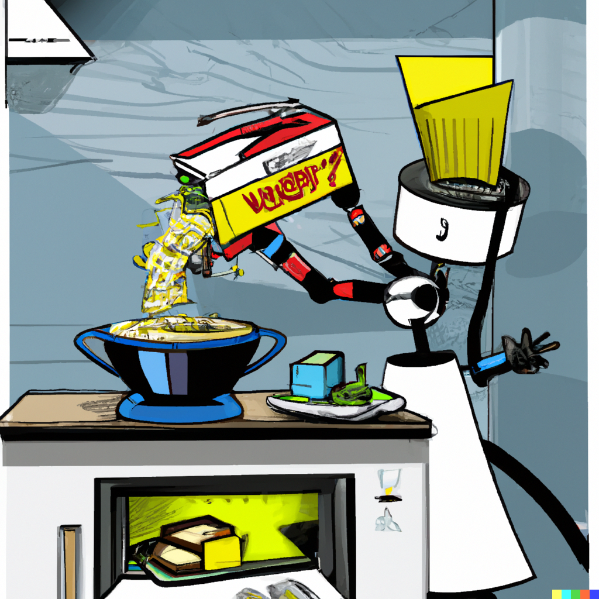

Mac and Cheese Recipe

How to make Mac and Cheese
Mac and cheese is the ultimate comfort food that's loved by all ages. This
classic and creamy mac and cheese recipe is made with elbow macaroni
and a rich cheese sauce, made with a blend of cheddar and Parmesan
cheese. The result is a cheesy and delicious pasta dish that will leave you
feeling satisfied and comforted. Whether you're looking for a quick and
easy dinner option, or a side dish for a special occasion, this mac and
cheese recipe is sure to become a staple in your kitchen. With its creamy
and cheesy goodness, it's the perfect dish for any day of the week. Enjoy!
Ingredients:
- 1 lb elbow macaroni
- 4 tablespoons butter
- 4 tablespoons all-purpose flour
- 3 cups milk
- 1 teaspoon dry mustard
- Salt and pepper to taste
- 8 oz grated cheddar cheese
- 2 oz grated Parmesan cheese
Steps:
- Cook the macaroni according to the package directions, drain and set aside.
- In a separate saucepan, melt the butter over medium heat.
- Stir in the flour and cook for 1-2 minutes, until the mixture turns light brown.
- Gradually add the milk, whisking until the mixture thickens, about 5-7 minutes.
- Add the dry mustard, salt, and pepper to taste.
- Continue cooking and whisking until the mixture thickens, about 5-7 minutes.
- Remove from heat and stir in the cheddar and Parmesan cheeses until they're melted and well combined.
- Add the cooked macaroni to the cheese sauce and stir to combine.